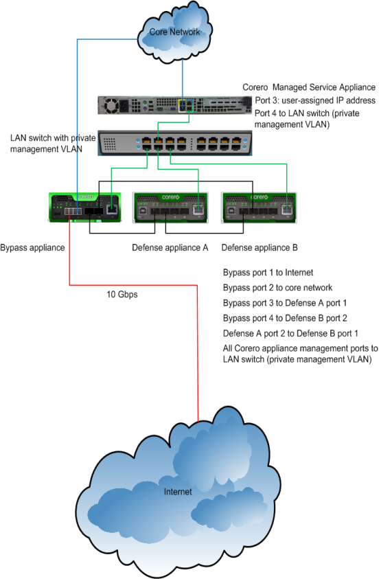
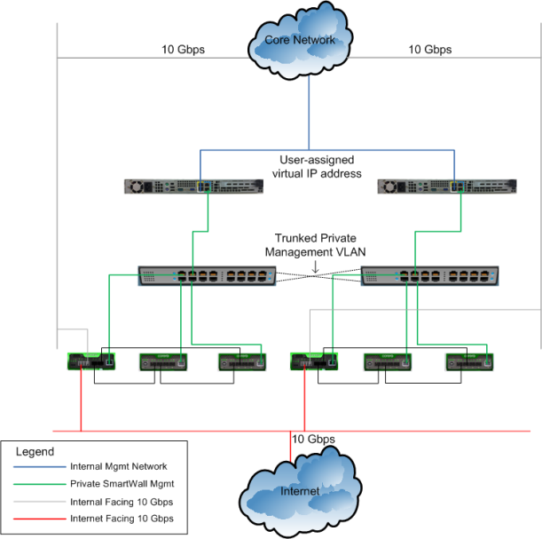

Show search and navigation tools
Getting Started With SmartWall Threat Defense System
Your Corero SmartWall Threat Defense System is shipped to you with the following components, with variations for your particular configuration:
- Corero Managed Service Appliance (two, if you are using an HA configuration). This platform is loaded and preconfigured with Corero Management Server (CMS) software, as well as Corero SecureWatch Analytics software.
- Network cables
- SFP connectors
- Defense appliance, if your configuration uses one.
- Forensics appliance, if your configuration uses one.
- Bypass appliance, if your configuration uses one.
Customer-Supplied Information
Your Corero Managed Service Appliance is shipped to you with its IP addresses preconfigured by Corero. To facilitate this, you need to supply Corero with the following information in order for your Managed Service Appliance to be preconfigured correctly for your network:
- IP address and subnet mask – The management IP address you will use to access the configuration from your core network. If you are using an HA configuration, you'll need one for each Managed Service Appliance, plus a third to provide a virtual management interface that will float between the two servers, depending on which is active.
- Bypass appliance IP address and subnet mask – The management IP address you will use to access the Bypass appliance
- DNS IP address – The address of the DNS server you will use for the site. You may have more than one of these.
- Default gateway IP address – The address of the default gateway for your site.
- NTP IP address – The address of the NTP server you wish to use for the site. You may have more than one of these. Corero can provide you with an NTP server address if you do not have one of your own.
- SFP+ adapter type – For Defense appliances and Bypass appliances. Multi-mode or single mode, or direct attached cable for a copper interface.
- Bypass model requirements – Indicate whether your Bypass appliance will connect to multi-mode or single mode cables.
Additional prerequisites:
- You need to have the ability to support reverse tunnels over TCP port 22. This enables monitoring by Corero's Security Operations Center.
- You need to provide a LAN switch for use with the configuration. You'll need a switch port for the Managed Service Appliance, plus one port for each appliance managed by the CMS. Note that the switch ports all must be in single private management VLAN.
Optional addresses you may want to be prepared with:
- IP addresses for SNMP monitoring systems, if used.
- IP addresses for syslog clients, if used.
SmartWall Threat Defense System Network Wiring
The illustration below shows an example of a SmartWall Threat Defense System installation. The Corero Managed Service Appliance, which hosts the CMS software and the Corero SecureWatch Analytics, is connected to the user's core network via a user-assigned IP address that is appropriate for that network. The Managed Service Appliance is connected also to a user-supplied LAN switch, which segregates the management traffic on a private VLAN. The CMS is on this VLAN, as is the SecureWatch Analytics (also hosted on the Managed Service Appliance, though it is not shown in this illustration). One SmartWall Network Bypass Appliance and two SmartWall Network Threat Defense Appliances are connected on the VLAN via their management ports. The connections between the Bypass appliance and the Defense appliances are described in detail in the illustration.

CMS High Availability Configuration
The illustration below shows an example of a high availability configuration of the CMS. The installation is essentially the same as for the non-redundant configuration, but there is a virtual IP address shared by the two Managed Service Appliances.

Connect Power To The Corero Appliances
To connect power to the Corero appliances:
- Plug the power cord into the power inlet of the AC-input power supply and connect the other end of the AC-input power supply cord to an AC outlet.
- If the appliance is functioning properly, the LEDs on its front panel will turn green.
Log In To The CMS
To log in to the CMS:
- Launch a web browser (Internet Explorer, Firefox, Chrome, and Safari are supported for use with the CMS).
- Type https://cmsipaddress in the browser's address field (where cmsipaddress is the preconfigured IP address of the CMS) to display the CMS login screen.
- Type the username and password for the account you wish to use. For example, to log in using the built-in administrator account, type admin for the default username and admin for the default password.